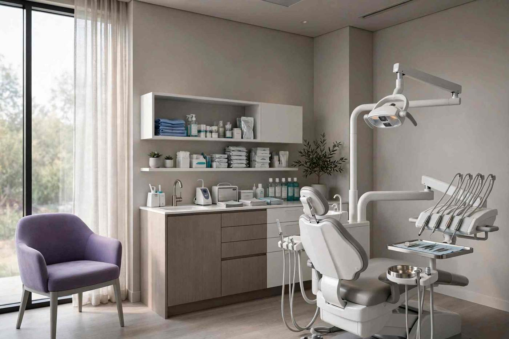

The wiring, made visible
Leads captured by the chat widget
This page reads the same local sheet-log the chat widget writes to. Use the chat on the home page — request a callback, or tap the WhatsApp hand-off — then return here: your rows appear with their references. That round-trip is the add-on's lead wiring, proven end to end.
Local sheet-log in this browser: loading…
Callback leads
WhatsApp hand-off clicks
When a visitor decides the bot has reached its limit, the hand-off matters. Each click on "WhatsApp a person" inside the chat is recorded here before the chat opens.
The studio behind the log

How to test this page
- Go to the studio page and open the violet chat widget.
- Tap "Request a callback", give a name, then try a wrong phone number first — the bot names the rule and asks again.
- Enter a valid Pakistani mobile (03… , 11 digits). The bot confirms with a CB-DEMO reference.
- Come back here: the lead is in the table above, with the same reference.
- Reload both pages — the conversation and the log persist in your browser until you tap "Clear chat".